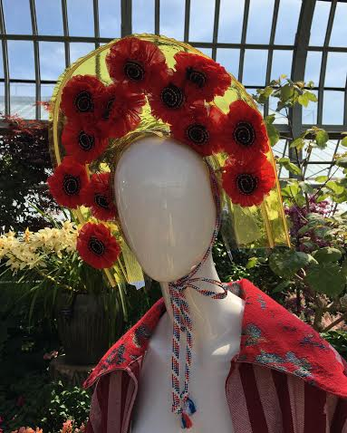
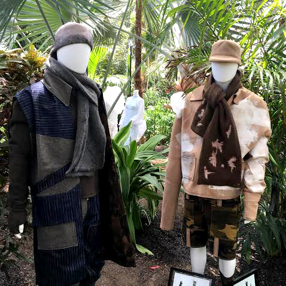
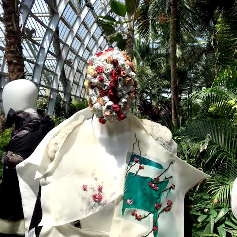

SAIC's Reflections: From Flora to Fashion
From Flora to Fashion was the theme of SAIC’s 2016 International Student Fashion Exhibit. This one of a kind exhibition was showcased at the Garfield Park Conservatory on May 13-15 in several of its plant rooms. Sophomores, Juniors and Seniors of the SAIC Fashion Department used the botanical gardens of Chicago as a place to showcase their intricate cuts of fabric, shiny sequins, monochrome fits, and clothes that made use of all of the colors of the color wheel. This year’s theme Reflections was geared to touch on sensible concepts and material use within the fashion industry. The goal was to counter the stigma that fashion has and its effects on our environment and ecosystem.

The exhibit utilized The Conservatory space as a way to show how fashion can play a huge role in a sustainable society. White mannequins with white clothing were placed purposely throughout the fern room of The Conservatory, and every designer had his or her own vision and theme. Just walking around The Conservatory, there were influences from cultures worldwide.

Who would have thought that fashion and flowers would translate so well. SAIC international students utilizes nature's effortless beauty to enhances viewers experience.The garden walk threads together deeply rooted connections with designers from the past and the future. Designers forge these connections by bringing together all influences from different eras of society. Ranging from prehistoric tibetan styles,to victorian ages, to the retro 80’s, and to the minimalist trends of today.

Sam, a Junior at SAIC said, “The pieces are so conceptual. I like the way they are set up throughout the whole Conservatory, it's really nice. They really feel like they're in here. They don't feel like they're put in for a short amount of time, it feels really natural in this place. There’s so many different types of garments, and there's something that everyone can get enjoyment from. It's not just straightforward fashion.”

Reflections: From Flora to Fashion was an amazing exhibit. The diversity of the exhibition made it enjoyable for a lot of different people. People from different parts of Chicago, and even people from different countries found the exhibit eye opening and fascinating. SAIC gives back to the community culturally and environmentally by focusing on sustainable fashion and by featuring their artwork in a public space in a diverse area of Chicago.
photo credits: lillian holden
contributing writer: lillian holden